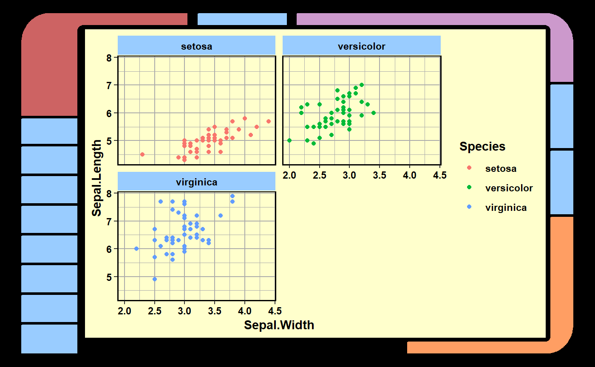

Author: Matthew Leonawicz
License: MIT


Library Computer Access/Retrieval System (LCARS)
The lcars package provides simple approximations to LCARS style and appearance to give static plots and interactive data analysis an LCARS theme.
- One key feature in
lcarsis the ability to wrap ggplot objects in an LCARS-themed border usinglcars_border. - There is also support for an LCARS-themed Shiny UI using
lcarsPageand related functions.
While the former is fun and useful for static graphs, the latter is much more exciting because it means you can make something with the look and feel of LCARS that also actually functions!

That’s right. Make your Shiny app, view it on a touch screen device like your very own Federation issue data PADD, and transport yourself into the future of the Star Trek universe with this 1980s sci-fi television aesthetic!
The static plot border and Shiny lcarsBox widget both give plenty of control over the style. Given their different fundamental designs, they provide somewhat different aspects of design control via their respective function arguments.
Function names
On the topic of the split between Shiny and non-Shiny functions, most of the package is Shiny-related. There is less focus on the ggplot border effect and related border component functions. Shiny functions use camel case like lcarsBox whereas non-Shiny functions use snake case like lcars_border.
Shiny functions
There are several Shiny functions available. These are UI containers and widgets that provide various LCARS aesthetics.
UI setup and containers:
lcarsPagelcarsBoxlcarsSweeplcarsBracketlcarsWellinputColumn
Headers and indicators:
-
lcarsHeader,lcarsh1throughlcarsh6. -
lcarsRect,lcarsPill, etc.
Input controls
lcarsButtonlcarsCheckboxlcarsTogglelcarsRadiolcarsRadioToggle
The key widgets are lcarsHeader, lcarsBox and lcarsSweep. An example of the header and box is shown above. Here is a combined LCARS sweep and reverse sweep:

The screenshots above are taken directly from demo apps included in the package. See ?lcarsApp for details.
Installation
You can install the released version of lcars from CRAN with:
You can install the development version of lcars from GitHub with:
Example
Below is a basic example using lcars_border to wrap a basic LCARS-like border around a ggplot object and draw the new plot.
library(lcars)
library(ggplot2)
g <- ggplot(iris, aes(Sepal.Length, Sepal.Width, color = Species)) +
geom_point() + facet_wrap(~Species, 2) + theme_lcars_light()
len_frac <- c(0.3, 0.5, 0.2, 0.4, 0.3, 0.2, 0.1, 0.3)
n_seg <- c(1, 2, 0, 8)
lcars_border(g, corners = 1:3, length_frac = len_frac, side_n_segments = n_seg)
The appearance can be improved and customized significantly from the basic example above, as shown in the vignette. However, the Shiny widgets are not only interactive, which is a critical feature for an LCARS display, but they also look much better; to the point that when sharing a static plot, you may still find it preferable to take a screenshot of a shiny widget rather than using lcars_border with a ggplot object.
For more detailed examples including Shiny app examples, see the package vignette.
Please note that this project is released with a Contributor Code of Conduct. By participating in this project you agree to abide by its terms.